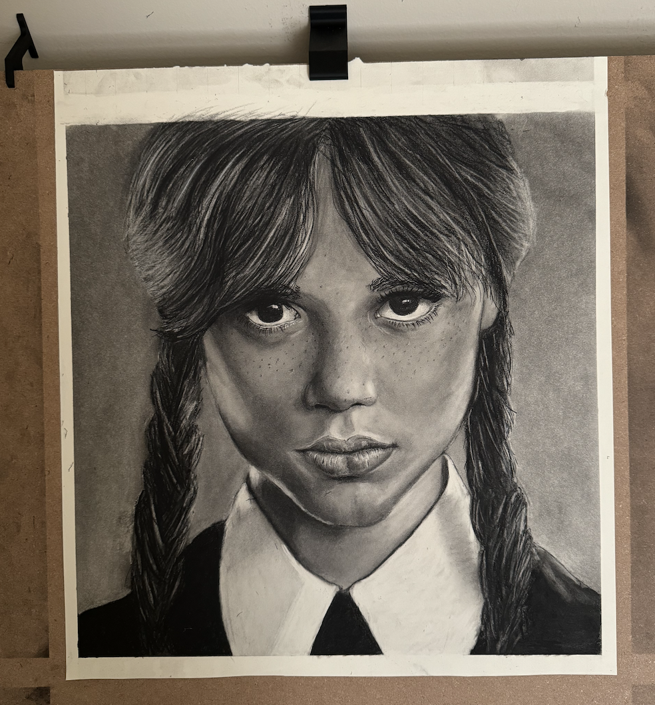
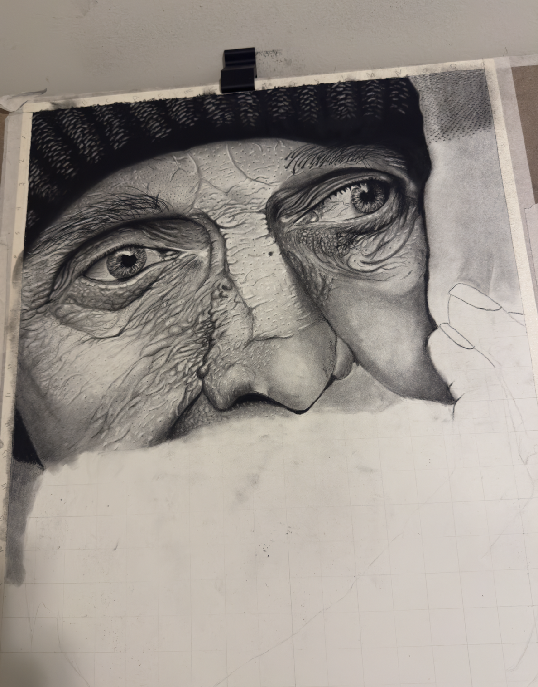

2025 Drawings
Charcoal portraits completed in 2025 — my return to drawing after a three-year break.
Wednesday Addams

I drew Wednesday Addams in charcoal. This piece took about 15 hours to complete and measures 45 × 49 cm. This was my first drawing after a three-year break, and my first charcoal piece in about five years. I don't think it looks exactly like her, but I'm happy with the shading and it felt great to get back into drawing. I also had to build a drawing desk out of my piano stand just to start — you can find that in the 3D printing section.
Old Man Portrait


I drew this piece about a month after finishing Wednesday. It took about 30 hours to complete and measures 47 × 59 cm. I was able to capture a lot more detail compared to the previous drawing. I worked from the top left down to the bottom right, and I can tell where I started to get bored and stopped looking at the reference as closely — even so, the hands ended up being one of the strongest parts of the piece. This was also my first time attempting white hair by scratching into the paper before applying a thin layer of charcoal over it. The technique worked, but in the future I would use even less charcoal on top to keep the highlights brighter.